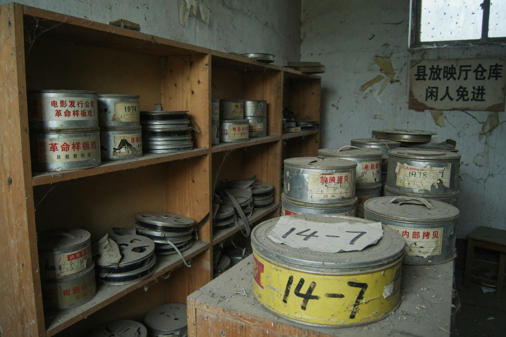

FilmVault inventory

Eighty-seven copies in the vault. Eighty-six have titles. One has no title. Spine only has a seat number: 14-7. Row fourteen, seat seven. Last row, against the wall.
The nameless leader develops white. White film in the machine and the screen still throws names. Names come from the HoldSeat list, not from the emulsion.
Vault door answers to a Stub. Stub in the tin. Tin in the snack-counter till. Snacks do not sell this ticket.
One line on the count sheet is inked out. Under the ink you can still see guest. Guest has no staff number. Guest only has kin.
This vault is not an easter egg. It puts seats and film on the same line. Other end of the line is the unclaimed paper.
INTERNAL
Three of the eighty-seven copies are moldy. Moldy ones still have titles. The one with no title is dry instead. Dry as if it was never projected. Film that was never projected can still throw names on the screen. Names from the list. List from a vacancy. Vacancy from an ExtraShow that did not let out.
Seat 14-7 shows twice on the count sheet. Once on the spine, once in the note. Note inked out. Person who inked it may have been Tianmai. Tianmai was afraid you would see guest first. Fear does not help. Guest will grow out of the Stub.
The humidity card in the vault stopped on a mark. A stopped card still hangs. Hangs to look professional. A professional count still wrote guest in the note. Note inked. Inked and the writing still shows. People who see the writing go looking for a Stub. Stub can be searched. The paper you find looks more like an ending key than the film in the vault.